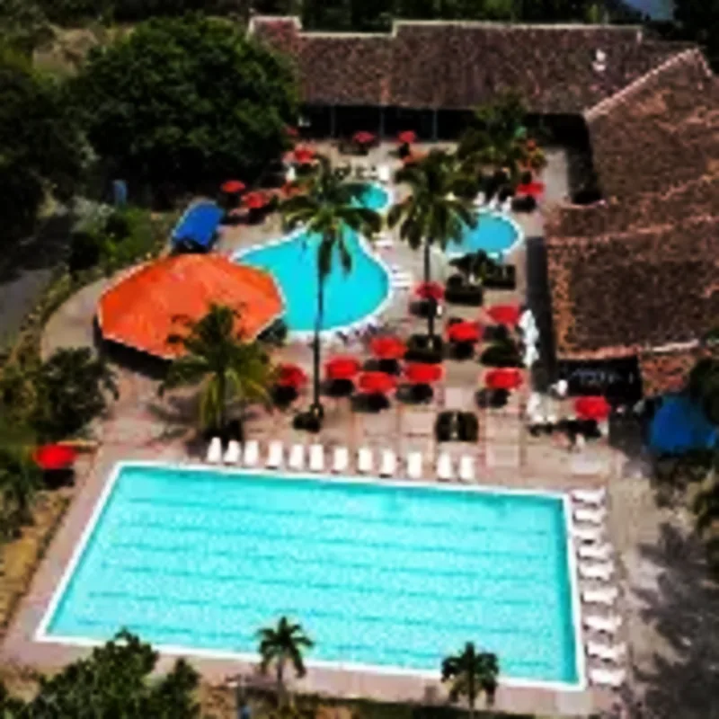
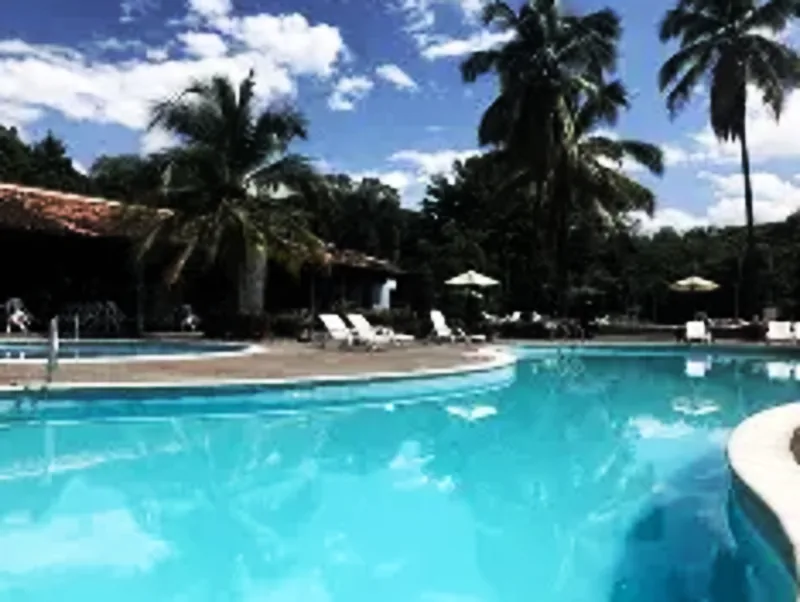

Hostería con el lago más grande del occidente antioqueño, rodeada de naturaleza a solo 1h 45min de Medellín. Tres piscinas, kayak, pesca deportiva y planes todo incluido. Ideal para familias, grupos y escapadas de fin de semana en Santa Fe de Antioquia.
Plan Todo Incluido
Tarifas 2026
Día de Sol desde $87.000 por persona — incluye almuerzo, piscinas, lago y todas las instalaciones.
Paquetes Todo Incluido desde $130.000 por persona — alojamiento, desayuno, almuerzo, cena, actividades y acceso total.
Precios pueden variar según temporada. Cotiza directamente para obtener la mejor tarifa.
Diversión para Todos
Navega el lago más grande del occidente antioqueño. Kayaks disponibles para toda la familia.
Pesca recreativa en el lago. Ideal para aficionados y niños que quieran aprender.
Senderos ecológicos rodeados de naturaleza y avistamiento de aves del occidente antioqueño.
Zona de asados disponible para compartir en familia o con amigos.
Parque infantil seguro para los más pequeños. Diversión garantizada.
Ubicación
Desde Medellín, toma la Autopista Mar 1 (vía al mar) en dirección a Santa Fe de Antioquia. El recorrido es de 78 km, aproximadamente 1 hora y 45 minutos.
También puedes tomar un bus desde la Terminal Norte de Medellín con destino Santa Fe de Antioquia. Una vez en el municipio, la hostería está ubicada en la vía principal de acceso.
Coordenadas: 6.5565, -75.8267 — Google Maps te lleva directo.
Hostería Florida Tropical
Testimonios
"El lago es impresionante. Mis hijos no se querían bajar de los kayaks. Las piscinas limpias y la comida deliciosa. Volveremos cada puente."
Medellín — Familia de 4
"La mejor relación calidad-precio que he visto. Pagamos el todo incluido y valió cada peso. El personal es súper atento. Recomendadísimo."
Bello — Pareja
"Fuimos un grupo de 15 personas y nos atendieron espectacular. La zona BBQ fue el hit del fin de semana. Naturaleza pura."
Envigado — Grupo de amigos
Preguntas Frecuentes
Sí, la Hostería Florida Tropical ofrece planes de día de sol desde $87.000 por persona con acceso a 3 piscinas, lago, almuerzo típico y todas las instalaciones. Ideal para un día en familia.
El plan todo incluido abarca alojamiento, desayuno, almuerzo, cena, acceso ilimitado a piscinas y lago, kayak, pesca deportiva, senderismo y actividades recreativas. Precios desde $130.000 por persona.
Sí, Florida Tropical es pet-friendly. Se admiten mascotas de tamaño pequeño y mediano con correa. Consulta al momento de reservar por las políticas específicas.
Puedes reservar directamente por WhatsApp al número de la hostería. Te recomendamos hacer tu reserva con al menos 48 horas de anticipación, especialmente en temporada alta y fines de semana.